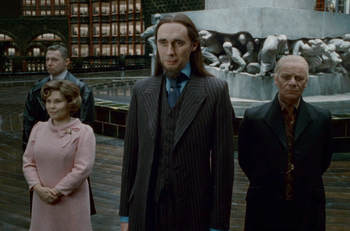

Diario del Ministerio: El profeta
Publicado todos los días en la mañana, es el periódico más famoso del país.
Rita Skeeter es la reportera más conocida el diario (por ser amarillista y pretenciosa).
Ginevra Weasley Ginny es la reportera más joven. Pero ya es reconocida por su profesionalismo y esfuerzo en el trabajo
El Quisquillloso esta revista es la mayor y única competencia del Diario el Profeta.
La familia Lovegood es la encargada de la oposición a través de su revista el Quisquilloso. Sin embargo, cada uno tiene su grupo de lectores en el mundo mágico británico.

Historia
El Ministerio británico de magia es el máximo órgano de gobierno de la comunidad mágica de Gran Bretaña e Irlanda, se encarga de regular todos los aspectos de la sociedad de los magos, incluyéndose entre estos la educación, jurisprudencia y economía.
Origen
desde el siglo XIII
Antes de que existiera un ministerio, el Consejo de Magos era la entidad mandataria en el país. Cuando el Consejo creó sus primeras leyes en el XVI, pasó a convertirse en un ministerio como tal.
- Barberus Bragge: Director en el 1269
- Burdock Muldoon: Director en el siglo XIV
- Primeras leyes de Quidditch: Años 1600
Siglos XVII a XIX
Principales eventos
El ministerio clasificó las 3 maldiciones imperdonables: Imperius, Cruciatus, Avada Kedavra. En el año 1717.
En el 1692 se estableció el estatuto Secreto, que ordena a los magos esconder la magia del mundo muggle. Esto ocurre a nivel mundial, por la afiliación del Ministerio Británico a la Confederación Internacional de Magos. Ea vero voluptatum qui ut dignissimos deleniti nerada porti sand markend
Ministros de la época
Artemisia Lufkin (1798-1811) figura en la historia como la primera ministra de magia, un gran triunfo para la desigualdad de género en el mundo mágico.
El Departamento de Regulación y Control de Criaturas Mágicas fue dividido en 3 por el ministro Grogan Stump (1811-1819), las cuales son: División de Seres, División de Bestias y División de Espíritus.
Siglo XX en adelante
Previo a las guerras
Durante el mandato de Nobby Leach (1962-1978) se produjeron los disturbios de los sangre pura durante las marchas por los derechos de los squib. La primera guerra mágica ocurrió entre 1970 y 1981. Pero durante los años 90 ocurrieron la mayor cantidad de eventos:
- 1993: Se escapa Sirius Black en Azkaban. Anticipando un gran escape de mortífagos en 1996.
- 1995: Regresa Voldemort durante la celebración del torneo de los 3 magos. Inicia la segunda guerra -el ministro Cornelius Fudge hizo todo para ocultar este hecho-.
- 1996: El ministro Rufus Scrimgeour intentó luchar contra Volvemort directamente, el mismo fue asesinado por los mortífagos el siguiente año.
- 1997-8: Lord Voldemort ministra el mundo mágico a través del ministro Pius Thicknesse, con la maldición Imperius.
Al derrotarlo y terminar la guerra, el ministerio queda en manos de Kingsley Shacklebolt.
- Al ser auror y ministro, recuperó el mundo mágico y ahora es reconocido por su sabiduría.
- Su mandato fue de casi 20 años, históricamente largo y en paz luego de los períodos de guerra.
- En 2018, el ministerio cambia de líder, el título se lo queda la aurora Hermione Granger.
Departamentos
El ministerio se divide en áreas -8 departamentos en total- para tratar separadamente los asuntos del mundo mágico. Los principales departamentos son los siguientes
Deporte y Juegos Mágicos
Establece y controla las leyes relacionadas a juegos. Organiza eventos de esta naturaleza.
Regulación y Control de Criaturas Mágicas
Responsable de la ocultación, el cuidado y control de todas las bestias mágicas, seres y espíritus. Segundo más grande.
Galería de fotos

Ministros
A continuación las menciones honorables de ministros del siglo actual y el previo.
Shacklebolt perteneció a la orden del fénix y estuvo en el cargo de ministro desde el 2 de mayo de 1998 hasta el 2018. Trabajó para eliminar toda la corrupción y discriminación en el Ministerio.
Kingsley Shacklebolt
Auror
La ministra actual es la más talentosa e inteligente de su generación, posee una gran compasión, que la ha llevado a apoyar y crear causas sociales para protección de seres y criaturas mágicas.

Hermione Granger
Aurora
Scrimgeour fue un mago honesto al servicio de la comunidad y un talentoso auror con experiencia contra las artes oscuras. Tiene el honor de aparecer en esta lista por morir en la guerra, en su último esfuerzo por hacer su deber.
Rufus Scrimgeour
Auror
Cuando fue nombrada, varios de los magos más ancianos del Wizengamot abandonaron la sala en protesta, probablemente por cuestiones de género.Lufkindescrip es una Hufflepuff.
Artemisia Lufkin
Ministra
Thicknesse tuvo el cargo desde el 1 de agosto de 1997 hasta el 2 de mayo de 1998. Fue utilizado por Voldemort y sus mortífagos bajo la maldición Imperius durante el mandato. Antes de ello, colaboró con ellos para lograr la caída de su antecesor, Scrimgeour.
Pius Thicknesse
Experto en justicia
Contact
Realizado por Daniela Isabel Pinila - Asignatura: Gráfica Interactiva 2020-1
magic
El edificio del Ministerio se encuentra en el subsuelo de la ciudad de Londres, a miles de metros de profundidad de la superficie. El edificio consta de nueve pisos, donde se encuentran repartidos los ocho departamentos principales, encargados de todos los asuntos relacionados con la comunidad mágica de Inglaterra.
XXXX Calle
London
dipinillaq@unal.edu.co